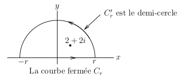

Analyse Complexe
Ce document est une courte révision de l'analyse complexe de base à l'aide de Maple. Par défaut, Maple assume que toutes les variables représentent de nombres complexes. Donc, nous avons utilisé des expressions complexes depuis le début.
Nombres complexes
Tout nombre de la forme \(a+bi\), où \(a\) et \(b\) sont des nombres réelles, est un nombre complexe. Le nombre \(i\) est le nombre imaginaire tel que \(\displaystyle i^2 = -1\). Dans Maple, le nombre \(i\) est dénoté par la lettre majuscule I.
> I; I^2;\[ \begin{split} & I \\ & -1 \end{split} \]
Nous présentons ci-dessous quelques exemples d'opérations élémentaires avec les nombres complexes.
> z:=3+4*I; w:=-3-2*I; z+w; z-w; z*w; z/w;\[ \begin{split} & z := 3 + 4\,I \\ & w := -3 -2\,I \\ & 2\,I \\ & 6 + 6\,I \\ & -1 -18\,I \\ & - {\displaystyle \frac {17}{13}} - {\displaystyle \frac {6}{13}} \,I \end{split} \]
Soit \(z=a+b\,i\) un nombre complexe, le nombre réel \(a\) est appelé la partie réelle de \(z\) et le nombre réel \(b\) est appelé la partie imaginaire de \(z\). Les commandes Re() et Im() de Maple sont utilisées pour obtenir la partie réelle et la partie imaginaire d'un nombre complexe.
> Re(z); Im(z);\[ \begin{split} & 3 \\ & 4 \end{split} \]
Tout nombre complexe \(z = a + b\,i\) défini un unique vecteur \(\vec{z} = (a,b)\) du plan \(x,y\) (et vice-versa).

Ainsi, tout nombre complexe \(z=a+b\, i \neq 0\) est uniquement déterminé par la longueur \(\displaystyle r=\sqrt{a^2+b^2}\) du vecteur \(\vec{z}\) et l'angle \(\theta\) entre le vecteur \(\vec{z}\) et l'axe des \(x\), mesuré dans la sens contraire aux aiguilles d'une montre à partir de l'axe des \(x\) et tel que \(-\pi < \theta \leq \pi\). L'origine est une exception car \(r=0\) et \(\theta\) peut être un angle quelconque. Nous avons que \(a = r \cos(\theta)\) et \(b = r \sin(\theta)\). Nous obtenons la forme polaire
\[ z = r\cos(\theta) + i\, r\sin(\theta) = r e^{\theta i} \]du nombre complexe \(z\). La formule \(\displaystyle e^{\theta i} = \cos(\theta) + i\,\sin(\theta)\) pour tout \(\theta \in \mathbb{R}\) est connue sous le nom de formule d'Euler. La fonction abs() de Maple donne la norme (longueur) du nombre complexe et la fonction argument() donne la valeur de l'angle entre le vecteur et l'axe des \(x\), mesuré dans le sens contraire aux aiguilles d'une montre et tel que la valeur de l'angle est entre \(-\pi\) (exclus) et \(\pi\) (inclus).
> r:=abs(z); theta:= argument(z); evalf(theta);\[ \begin{split} & r := 5 \\ & \theta := \arctan\left({\displaystyle \frac {4}{3}} \right) \\ & 0.9272952179 \end{split} \]
> evalc(r*exp(theta*I));\[ 3 + 4\,I \]
Note: La figure précédente peut être dessinée avec Maple. Cependant, le résultat n'est pas très joli. Le lecteur pourrait être intéressé à exécuter les commandes suivantes dans Maple.
> with(plots): with(plottools):
line1 := arrow([-1, 0], [4, 0], 0.05, 0.2, 0.05, color = black):
line2 := arrow([0, -1], [0, 4], 0.05, 0.2, 0.05, color = black):
line3 := line([0, 0], [2, 3.6], color = red):
text1 := textplot([2, 3, "z=(a,b)"], align = {ABOVE, RIGHT}, font = [COURIER, 16]):
text2 := textplot([0, 4, "y"], align = RIGHT, font = [COURIER, 16]):
text3 := textplot([4, 0, "x"], align = RIGHT, font = [COURIER, 16]):
text4 := textplot([2, 1, "q"], align = RIGHT, font = [SYMBOL, 16]):
arc1 := arc([0, 0], 2, 0 .. Pi/3, color = blue):
arrow1:=arrow([1.2,1.6],[1,1.7],0.1,0.2,1,color=blue):
text5 := textplot([1, 2, "r"], align = LEFT, font = [COURIER, 16]):
display({arc1, arrow1, line1, line2, line3, text1, text2, text3, text4, text5},
axes = none, view = [-1 .. 5, -1 .. 5], scaling = constrained);
Fonctions d'une variable complexe
Considérons la fonction définie par la commande de Maple suivante.
> f:=w->w^2+3*w;\[ f := w\rightarrow w^{2} + 3\,w \]
Si nous évaluons cette fonction à \(z=3+4\,i\), alors nous obtenons
> f(3+4*I);\[ 2 + 36\,I \]
Supposons que \(z=x+y\,i\), où \(x\) et \(y\) sont réelles. Les deux commandes suivantes forcent Maple à traiter \(x\) et \(y\) entant que variables réelles.
> assume(x,real); assume(y,real);
Nous avons alors que \(f(x+y i)\) est donnée par l'expression suivante.
> fr:=evalc(f(x+y*I));\[ f := x{\scriptsize \sim}^{2} - y{\scriptsize \sim}^{2} + 3 \,x{\scriptsize \sim} + I\,(2\,x{\scriptsize \sim}\,y{\scriptsize \sim} + 3\,y{\scriptsize \sim}) \]
Le symbole \(\scriptsize \sim\) après les variables \(x\) et \(y\) indique que ces variables sont réelles. Les parties réelles et imaginaires de cette fonction sont données ci-dessous.
> Re(fr); Im(fr);\[ \begin{split} & x{\scriptsize \sim}^2-y{\scriptsize \sim}^2+3 x{\scriptsize \sim} \\ & 2 x{\scriptsize \sim} y{\scriptsize \sim} +3 y{\scriptsize \sim} \end{split} \]
La dérivée d'une fonction \(f:\mathbb{C} \to \mathbb{C}\) est définie par
\[ f'(z) = \lim_{w\to 0} \frac{f(z+w)-f(z)}{w} \]si la limite existe. Nous mettons l'emphase sur le fait que \(w \in \mathbb{C}\) et peut approcher l'origine de toutes les façons imaginables. Si \(f(z) = u(z) + i\, v(z)\) est dérivable, alors la limite pour \( w \to 0\) le long the l'axe réel et la limite pour \( w \to 0\) le long de l'axe imaginaire donnent les relations suivantes.
\[ \begin{split} u_x(z) &= v_y(z) \\ u_y(z) &= -v_x(z) \end{split} \]Ces deux équations sont connues sous le nom d'équation de Cauchy-Riemann. Si \(\displaystyle u:\mathbb{C} \cong \mathbb{R}^2 \to \mathbb{R}\) et \(\displaystyle v:\mathbb{C}\cong \mathbb{R}^2 \to\mathbb{R}\) sont deux fonctions dérivables qui satisfont les équations de Cauchy-Riemann, alors la fonction \(f(z) = u(z)+i\,v(z)\) est une fonction d'une variable complexe dérivable. Un résultat surprenant est que si la fonction \(f:\mathbb{C}\rightarrow \mathbb{C}\) est dérivable, alors elle est dérivable un nombre infini de fois.
Exemple: Considérons la fonction définie par la commande de Maple suivante.
> f:=z->z^2*(1-z);\[ f := z\rightarrow z^{2}\,(1 - z) \]
Nous vérifions que \(f\) satisfait les équations de Cauchy-Riemann.
> assume(x,real); assume(y,real); > u:=Re(evalc(f(x+I*y))); v:=Im(evalc(f(x+I*y)));\[ \begin{split} & u := (x{\scriptsize \sim}^2-y{\scriptsize \sim}^2) (-x{\scriptsize \sim}+1)+2 x{\scriptsize \sim} y{\scriptsize \sim}^2 \\ & v := 2 x{\scriptsize \sim} y{\scriptsize \sim} (-x{\scriptsize \sim}+1)-(x{\scriptsize \sim}^2-y{\scriptsize \sim}^2) y{\scriptsize \sim} \end{split} \]
> diff(u,x); diff(v,y);\[ \begin{split} & 2 x{\scriptsize \sim} (-x{\scriptsize \sim}+1)-x{\scriptsize \sim}^2+3 y{\scriptsize \sim}^2 \\ & 2 x{\scriptsize \sim} (-x{\scriptsize \sim}+1)-x{\scriptsize \sim}^2+3 y{\scriptsize \sim}^2 \end{split} \]
Nous avons bien que \(u_x(x,y) = v_y(x,y)\).
> diff(u,y); diff(v,x);\[ \begin{split} & -2 y{\scriptsize \sim} (-x{\scriptsize \sim}+1)+4 x{\scriptsize \sim} y{\scriptsize \sim} \\ & 2 y{\scriptsize \sim} (-x{\scriptsize \sim}+1)-4 x{\scriptsize \sim} y{\scriptsize \sim} \end{split} \]
Nous avons bien que \(u_y(x,y)=-v_x(x,y)\).
Séries de Taylor et de Laurent
Séries de Taylor
Supposons que \(f:D \to \mathbb{C}\) est un fonction dérivable où \(D \subset \mathbb{C}\) est un disque de rayon \(R\) centré à \(z_0\). La série de Taylor de \(f\) à \(z_0\) est la série
\[ f(z) = \sum_{n=0}^\infty\,a_n (z-z_0)^n \qquad , \qquad z \in D \ , \]où
\[ a_n = \frac{1}{n!}\,\frac{\partial^n}{\partial z^n}f(x_0) \ . \]La série converge (ponctuellement) vers \(f(z)\) pour tout \(z \in D\).
Remarque: La formule pour la série Taylor d'une fonction infiniment dérivable \(f:\mathbb{R}\to\mathbb{R}\) est presqu'identique à la formule ci-dessus pour une fonction dérivable de \(\mathbb{C}\) dans lui-même. C'est-à-dire, elle est
\[ f(x) \sim \sum_{n=0}^\infty\,a_n (x-x_0)^n \ , \]où
\[ a_n = \frac{1}{n!}\,\frac{\partial^n}{\partial x^n}f(x_0) \ . \]La différence majeure est l'utilisation du symbole \(\sim\) pour la série de Taylor d'une fonction infiniment dérivable de \(\mathbb{R}\) dans lui-même au lieu du signe d'égalité comme nous avons pour la série de Taylor d'une fonction dérivable de \(\mathbb{C}\) dans lui-même. La raison pour cette différence est que la série de Taylor d'une fonction \(f:\mathbb{R} \to \mathbb{R}\) peut ne pas converger pour tout point \(x \neq x_0\) ou, si elle converge, elle peut ne pas converger ponctuellement vers la fonction \(f\) dans un voisinage de \(x_0\). Par exemple, si \(f:\mathbb{R} \to \mathbb{R}\) est la fonction définie par
\[ f(x) = \begin{cases} e^{-1/x^2} & \quad \text{if} \quad x > 0 \\ 0 & \quad \text{if} \quad x \leq 0 \end{cases} \]et \(x_0=0\), alors la série de Taylor de \(f\) à l'origine est nulle car les dérivées de tout ordre de \(f\) à l'origine sont nulles. Cependant, \(f\) n'est pas nulle dans un voisinage de l'origine. Pour les fonctions de \(\mathbb{C}\) dans lui-même, être dérivable est équivalent à être analytique. Ce n'est pas les cas pour les fonctions de \(\mathbb{R}\) dans lui-même comme nous venons de voir. Ceci démontre que la théorie des séries de Taylor est plus simple pour les fonctions de \(\mathbb{C}\) dans lui-même qu'elle l'est pour les fonctions de \(\mathbb{R}\) dans lui-même.
Exemple: Considérons la fonction \(f:\mathbb{C} \to \mathbb{C}\) définie dans Maple par la commande suivante.
> f:=z->sin(z^2-4);\[ f := z\rightarrow \sin(z^{2} - 4) \]
La série de Taylor de \(f\) à \(z=2\) est donnée par la commande suivante.
> unassign('z'):
> Tf:=series(f(z),z=2,10);
\[
\begin{split}
& Tf := 4\,(z - 2) + (z - 2)^{2} -
{\displaystyle \frac {32}{3}} \,(z - 2)^{3} - 8\,(z - 2)^{4} +
{\displaystyle \frac {98}{15}} \,(z - 2)^{5} +
{\displaystyle \frac {21}{2}} \,(z - 2)^{6} \\
& + {\displaystyle \frac {656}{315}} \,(z - 2)^{7} -
{\displaystyle \frac {196}{45}} \,(z - 2)^{8} -
{\displaystyle \frac {19151}{5670}} \,(z - 2)^{9} +
\mathrm{O}((z - 2)^{10})
\end{split}
\]
Les termes en \((z-2)\) de degrés jusqu'à \(9\) (un de moins que l'argument \(10\)) sont explicitement calculés par la fonction series(). Le terme \(\displaystyle O((z-2)^{10})\) dénote le reste de la série de Taylor; les termes en \((z-2)\) de degrés plus grand ou égale à \(10\). En raison de l'expression en grand \(O\) pour le reste de la série de Taylor de \(f\), la formule donnée par Tf ne peut pas être utilisée pour faire des calculs. Pour utiliser la série de Taylor pour faire des calculs, nous devons tronquer la séries au degré désiré. Pour exemple, la troncature de degré neuf de la série de Taylor de \(f\) ci-dessus est donnée par la commande suivante.
> Tft:=convert(Tf,polynom);\[ \begin{split} & Tft := 4\,z - 8 + (z - 2)^{2} - {\displaystyle \frac {32}{3}} \,(z - 2)^{3} - 8\,(z - 2)^{4} + {\displaystyle \frac {98}{15}} \,(z - 2)^{5} + {\displaystyle \frac {21}{2}} \,(z - 2)^{6} \\ & + {\displaystyle \frac {656}{315}} \,(z - 2)^{7} - {\displaystyle \frac {196}{45}} \,(z - 2)^{8} - {\displaystyle \frac {19151}{5670}} \,(z - 2)^{9} \end{split} \]
Ainsi
> evalf(subs(z=2+I,Tft));\[ - 23.85555556 + 15.73985891\,I \]
est une approximation de
> evalf(f(2+I));\[ - 22.97908558 + 14.74480519\,I \]
Nous avons besoin de plus de termes de la série de Taylor de \(f\) pour obtenir une meilleure approximation.
Nous pouvons utiliser la fonction taylor() au lieu de la fonction series() (avec les mêmes arguments) pour obtenir la série de Taylor d'une fonction. Nous pouvons aussi calculer les coefficients de la série de Taylor d'une fonction à l'aide de la fonction coeftayl().
Exemple: Le coefficient de \(\displaystyle (z-2)^5\) dans la série de Taylor de \(f\) ci-dessus à \(z=2\) est donné par la commande suivante.
> coeftayl(f(z),z=2,5);\[ \frac{98}{15} \]
Série de Laurent
Considérons une fonction \(f:\mathbb{C} \to \mathbb{C}\) et supposons que \(f\) a une singularité à \(z=z_0\) (i.e. \(f\) n'est pas dérivable à \(z=z_0\)). Il peut être possible d'exprimer \(f\) sous la forme d'une série de puissances en un point \(z=z_0\). En fait, nous avons souvent que \[ f(z) = \sum_{n=-\infty}^\infty\,a_n (z-z_0)^n \]
pour \(z\) dans un anneaux de la forme \(0 < |z-z_0| < R\) pour une valeur \(R > 0\). Nous pouvons aussi avoir que \(a_n\) est non-nul pour seulement un nombre fini d'indices négatives \(n\). Si \(N\) est le plus petit indice négatif tel que \(a_N \neq 0\), nous disons que \(z_0\) est un pôle d'ordre N de \(f\). La série ci-dessus est appelée la série de Laurent de \(f\) à \(z_0\). La somme
\[ \sum_{n=-\infty}^{-1}\, a_n (z-z_0)^n \]est appelée la partie principale de la série.
Exemple: Considérons la fonction \(f:\mathbb{C} \to \mathbb{C}\) définie dans Maple par la commande suivante.
> f:=z->sin(z)/(1-z^2);\[ f := z\rightarrow \frac{\sin(z)}{1 - z^{2}} \]
La série de Laurent de \(f\) à \(z=1\) est donnée par la commande suivante.
> Lf:=series(f(z),z=1,5);\[ \begin{split} & Lf := - {\displaystyle \frac {1}{2}} \,\sin(1)\,(z - 1)^{-1} + \left( - {\displaystyle \frac {1}{2}} \,\cos(1) + {\displaystyle \frac {1}{4}} \,\sin(1)\right) + \left({\displaystyle \frac {1}{8}} \,\sin(1) + {\displaystyle \frac {1}{4}} \,\cos(1)\right)\,(z - 1) + \\ & \left( - {\displaystyle \frac {1}{24}} \,\cos(1) - {\displaystyle \frac {1}{16}} \,\sin(1)\right)\,(z - 1)^{2} + \left({\displaystyle \frac {1}{96}} \,\sin(1) + {\displaystyle \frac {1}{48}} \,\cos(1)\right)\,(z - 1)^{3} + \mathrm{O}((z - 1)^{4}) \end{split} \]
La partie principale de cette série de Laurent est \(\displaystyle \frac{-\sin(1)}{2(z-1)}\). Ainsi, \(1\) est un pôle d'ordre un de \(f\).
Exemple: Considérons la fonction \(f:\mathbb{C}\to \mathbb{C}\) définie dans Maple par la commande suivante.
> f:=z->1/sin(z^3);\[ f := z\rightarrow {\displaystyle \frac {1}{\sin(z^{3})}} \]
Sa série de Laurent à \(z=0\) est donnée par la commande suivante.
> series(f(z),z=0,10);\[ z^{-3} + {\displaystyle \frac {1}{6}} \,z^{3} + \mathrm{O}(z^{4}) \]
Donc, \(z=0\) est un pôle d'ordre trois de \(f\).
Le coefficient du terme \( 1/(z-z_0)\) dans la série de Laurent d'une fonction \(f\) à un point \(z_0\) est appelé le résidu de \(f\) à \(z_0\). Ce coefficient est dénoté \(\mathrm{res}(f,z_0)\). Nous avons le résultat suivant.
\[ \oint_C f(z)\ \text{d}z = 2\pi i \big( \mathrm{res}(f,z_1) + \mathrm{res}(f,z_2) + \ldots + \mathrm{res}(f,z_k) \big) \ , \] où \(C\) est une courbe fermée dans le plan complexe, la courbe \(C\) est
orientée positivement et \(z_1, z_2, \ldots , z_k\) sont tous les
pôles de \(f\) à l'intérieur de la région \(D\) bornée par la courbe \(C\).
L'orientation positive de \(C\) est telle que la région \(D\) est à
gauche
de la courbe \(C\) lorsque nous nous déplaçons
le long de cette courbe.
Le résidu de \(f\) à \(z_0\) peut être calculé à l'aide de la fonction residue() de Maple.
Exemple: Considérons la fonction \(f:\mathbb{C} \to \mathbb{C}\) définie par la commande suivante de Maple.
> f:=z->1/sin(z);\[ f := z\rightarrow {\displaystyle \frac {1}{\sin(z)}} \]
Cette fonction a des pôles à \(n\pi\) pour \(n\) un entier. Le résidu de \(f\) à \(2\pi\) est donné par la commande suivante.
> with(residue): residue(f(z),z=2*Pi);\[ 1 \]
Nous pouvons vérifier ce résultat en calculant la série de Laurent de \(f\) à \(2\pi\).
> series(f(z),z=2*Pi,5);\[ (z - 2\,\pi )^{-1} + {\displaystyle \frac {1}{6}} \,(z - 2\,\pi ) + \mathrm{O}((z - 2\,\pi )^{3}) \]
Le coefficient de \(\displaystyle \frac{1}{z-2\pi}\) est effectivement \(1\).
Exemple Nous voulons évaluer l'intégrale de la fonction \(f\) définie par \(\displaystyle f(z) = \frac{1}{(3z-i)^2 \, \sin(z)}\) dans le sens contraire aux aiguilles d'une montre le long du cercle \(C\) de rayon \(1\) centré à l'origine; C'est-à-dire; nous voulons évaluer
\[ M = \oint_C \frac{1}{(3z-i)^2 \, \sin(z)}\ \text{d}z \]avec l'orientation positive sur la courbe définie par \(C = \{ z : |z| = 1 \}\).
La fonction \(f\) est définie par la commande suivante dans Maple.
> f:=z->1/(sin(z)*(3*z-I)^2);\[ f := z\rightarrow {\displaystyle \frac {1}{\sin(z)\,(3\,z - I)^{2}}} \]
Les pôles de \(f\) à l'intérieur du disque unité (i.e. la région bornée par la courbe \(C\)) sont \(0\) et \(i/3\). Puisque l'orientation de la courbe \(C\) est positive, la valeur de l'intégrale est donnée par la commande suivante.
> evalf( 2*Pi*I*( residue(f(z),z=0) + residue(f(z),z=I/3)));\[ .1119173282\,I \]
Nous pouvons calculer directement l'intégral. Puisque l'orientation sur la courbe \(C\) est dans le sens contraire aux aiguilles d'une montre, une représentation paramétrique de la courbe \(C\) est donnée par \(\displaystyle z = e^{t\, i}\) pour \(0 \leq t < 2\pi\).
> r:=t->exp(t*I);\[ r := t\rightarrow e^{(I\,t)} \]
La valeur de l'intégrale \(\displaystyle M = \int_0^{2\pi}(f(r(t))\,r'(r) \text{d}t\) est donnée par la commande suivante.
> evalf( int((f@r)(t)*diff(r(t),t),t=0..2*Pi) );\[ -2.962170701*10^{-14} + 0.1119173235\,I \]
Pour une intégration numérique, ce résultat est suffisamment près de la valeur exacte de l'intégrale.
Exemple Nous voulons évaluer l'intégrale
\[ \int_{-\infty}^\infty\,\frac{\sin(x)}{(x-2)^2+4}\ \text{d}x \ . \]Noue remarquons que cette intégrale est la partie imaginaire de l'intégrale
\[ \int_{-\infty}^\infty\, \frac{e^{ix}}{(x-2)^2+4}\ \text{d}x \]qui est l'intégrale
\[ \int_C \,\frac{e^{iz}}{(z-2)^2+4}\ \text{d}z \ , \]où \(C\) est la courbe définie par \(z=x\) pour \(-\infty < x < \infty\) et la direction le long de \(C\) est donnée par \(x\) croissant. La fonction \(f\) définie par \(\displaystyle f(z) = \frac{e^{iz}}{(z-2)^2+4}\) a des pôles à \(z = 2+2\,i\) et \(z=2-2\,i\). De plus,
\[ \lim_{r\rightarrow \infty} \oint_{C_r}\,\frac{e^{iz}}{(z-2)^2+4}\ \text{d}z = \int_C \,\frac{e^{iz}}{(z-2)^2+4}\ \text{d}z \ , \]où
\[ C_r = \{ x : -r \leq x \leq r\}\cup \{ re^{\theta i} : 0 < \theta < \pi \} \]est la courbe fermée dessinée ci-dessous

car
\[ \lim_{r\rightarrow \infty} \int_{C_r'} \frac{e^{iz}}{(z-2)^2+4} \ \text{d}z = 0 \ , \]où \(C_r'\) est le demi-cercle qui fait partie de la courbe \(C_r\). La démonstration que cette limite est nulle utilise des techniques enseignées dans un premier cours d'analyse complexe et repose sur le fait que l'intégrande converge uniformément vers \(0\) lorsque \(r \to 0\).
La courbe \(C_r\) est une courbe avec une orientation positive qui entour le pôle à \(2+2\,i\) si \(r\) est assez grand. Donc, la valeur de l'intégrale de la fonction \(f\) le long de la courbe fermée \(C_r\) est \(\mathrm{res}(f,2+2i)\) si \(r\) est assez grand. Cette intégrale est constante pour \(r\) assez grand. Nous pouvons faire ce calcul à l'aide des commandes suivantes de Maple.
> f:=z->exp(z*I)/((z-2)^2+4);\[ f := z\rightarrow {\displaystyle \frac {e^{(I\,z)}}{(z - 2)^{2} + 4}} \]
> evalf(2*Pi*I*(residue(f(z),z=2+2*I)) );\[ - 0.08846622805+ 0.1933022349\,I \]
Donc
\[ \int_C \,\frac{e^{iz}}{(z-2)^2+4}\ \text{d}z = \lim_{r\rightarrow \infty} \int_{C_r}\,\frac{e^{iz}}{(z-2)^2+4}\ \text{d}z = - 0.08846622805+ 0.1933022349\,i \]Finalement, nous obtenons que la valeur de l'intégrale initiale est donnée par la commande suivante.
> Im(%);\[ \displaystyle 0.1933022349 \]
Nous pouvons vérifier ce résultat à l'aide de Maple car il peut calculer l'intégrale impropre initiale.
> int(sin(x)/((x-2)^2+4),x=-infinity..infinity); evalf(%);\[ \begin{split} & {\displaystyle \frac{\pi \sin(2) \mathrm{cosh}(2)}{2}} - {\displaystyle \frac{\pi \sin(2) \mathrm{sinh}(2)}{2}} \\ & 0.193302235 \end{split} \]
Note: Comme c'était le cas pour la première figure de ce document, la figure précédente peut être dessinée à l'aide de Maple. Comme précédemment, l'image résultante n'est pas très jolie. Le lecteur pourrait être intéressé à exécuter les commandes suivantes dans Maple.
> with(plots): with(plottools):
line1 := arrow([-10, 0], [10, 0], 0.05, 0.5, 0.05, color = blue):
line2 := line([0, 0], [0, 13], color = black):
line3 := line([10, 0], [14, 0], color = black):
text1 := textplot([14, 0, "x"], align = RIGHT, font = [COURIER, 16]):
text2 := textplot([0, 13, "y"], align = RIGHT, font = [COURIER, 16]):
arc1 := arc([0, 0], 10, 0 .. Pi, color = blue):
text3 := textplot([10, 0, "r"], align = {BELOW, RIGHT}, font = [COURIER, 16]):
text4 := textplot([-10, 0, "-r"], align = {BELOW, LEFT}, font = [COURIER, 16]):
text5 := textplot([2, 3, "2+2*I"], align = RIGHT, font = [COURIER, 16]):
pt := point([2, 2], color = black, symbol = 'SolidCircle'):
text6 := textplot([0, 0, "0"], align = {BELOW}, font = [COURIER, 16]):
text7 := textplot([8.7, 8, "C_r"], align = LEFT, font = [COURIER, 16]):
display({arc1, line1, line2, line3, pt, text1, text2, text3, text4, text5, text6, text7},
axes = none, view = [-11 .. 15, -1 .. 14], scaling = constrained);
Applications conformes
Une application conforme est une fonction \(f:\mathbb{C}\to \mathbb{C}\) qui préserve les angles entre les courbes qui se coupent. Si la dérivée de \(f:\mathbb{C} \to \mathbb{C}\) est jamais nulle, alors \(f\) est une application conforme. Une famille importante d'applications conformes sont les fonctions \(f\) définies par
\[ f(z) = \frac{az+b}{cz+d} = \frac{a}{c} + \frac{bc-ad}{c} \left( \frac{1}{cz+d} \right) \]avec \(ad -bc \neq 0\). Ces fonctions sont appelées des transformations homographiques. Une transformation homographique est la composition d'une dilatation, \(cz\) , suivie d'une translation, \(cz+d\) , suivie d'une inversion, \(\displaystyle \frac{1}{cz+d}\) , suivie d'une autre dilatation, \(\displaystyle \frac{bc-ad}{c} \left(\frac{1}{cz+d}\right)\) , et suivie finalement par une autre translation, \(\displaystyle \frac{a}{c} + \frac{bc-ad}{c} \left(\frac{1}{cz+d}\right)\). Ainsi, une transformation homographique préserve les cercles (une ligne droite est un cercle de rayon infini).
Note: Un transformations homographique \(f\) est en fait une fonction du plan complexe compactifié \(\overline{\mathbb{C}}\) dans lui-même si nous posons \(f(d/c) = \infty\) et \(f(\infty) = a/c\).
Une transformations homographique est complètement déterminée par l'image de trois points.
Exemple: Considérons la transformation homographique \(f\) définie par \(\displaystyle f(z) = \frac{2z - 3}{2z + 3}\). Cette fonction est définie dans Maple par la commande suivante.
> f:=z->(2*z-3)/(2*z+3);\[ f := z\rightarrow {\displaystyle \frac {2\,z - 3}{2\,z + 3}} \]
Pour visualiser l'aspect conforme de cette fonction, nous dessinons l'image d'un rectangle par cette fonction. La fonction conformal() dans Maple dessine l'image de rectangles. Un rectangle avec des côtés verticaux et horizontaux est définie par les coordonnées de deux de ses coins opposés sur une diagonale. Par exemple, l'image par \(f\) du rectangle avec les coins opposés sur une diagonale à \(0\) et \(2+2\,i\) est dessinée par la commande suivante de Maple.
> with(plots): conformal(f(z),z=0..2+2*I,scaling=constrained);

Les lignes blues et rouges sont l'image de lignes horizontales et verticales respectivement (Est-ce que le lecteur peut expliquer pourquoi c'est le cas?).
Pour trouver la transformation homographique \(w=f(z)\) telle que \(f(z_1)=w_1, f(z_2)=w_2\) et \(f(z_3)=w_3\), il suffit de résoudre l'équation
\[ \frac{(w-w_1)(w_2-w_3)}{(w-w_3)(w_2-w_1)} = \frac{(z-z_1)(z_2-z_3)}{(z-z_3)(z_2-z_1)} \]pour w.
Exemple: Pour obtenir la transformation homographique \(f\) telle que \(f(1)=i, f(2)=3\) et \(f(i)=2\), nous devons résoudre pour \(w\) l'équation
\[ \frac{(w-i)(3-2)}{(w-2)(3-i)}=\frac{(z-1)(2-i)}{(z-i)(2-1)} \ . \]Ceci est fait par Maple avec les commandes suivantes.
> unassign('w'): unassign('z'):
> eq:=((w-I)*(3-2))/((w-2)*(3-I))=((z-1)*(2-I))/((z-I)*(2-1));
f:=eval(solve(eq,z));
\[
\begin{split}
& eq := {\displaystyle \frac {({\displaystyle \frac {3}{10}}
+ {\displaystyle \frac {1}{10}} \,I)\,(w - I)}{w - 2}} =
{\displaystyle \frac {(2 - I)\,(z - 1)}{z - I}} \\
& f = \frac{43-19 \,I-41 z+23 \,I z}{21-13 \,I+11 \,I z-17 z}
\end{split}
\]
Nous vérifions que nous avons effectivement la bonne transformation.
> subs(z=1,f);subs(z=2,f);subs(z=I,f);\[ \begin{split} I \\ 3 \\ 2 \end{split} \]
Si nous dessinons l'image du rectangle avec les coins opposés sur une diagonale situés à \(0\) et \(1+1\,i\), alors nous obtenons la figure suivante.
> conformal(f,z=0..1+I,scaling=constrained);

Température à l'état stationnaire
La distribution de la température à l'état stationnaire (i.e. indépendante du temps) dans une plaque mince est décrite par l'EDP
\[ \frac{\partial^2}{\partial x^2}T(x,y) + \frac{\partial^2}{\partial y^2}T(x,y) = 0 \ . \]Les fonctions \(T\) qui satisfont cette équation sont appelées des fonctions harmoniques. Le lecteur devrait vérifier à l'aide des équations de Cauchy-Riemann que la partie réelle et la partie imaginaire d'une fonction dérivable de \(\mathbb{C}\) dans \(\mathbb{C}\) sont des fonctions harmoniques.
Notre but est de trouver la distribution de chaleur à l'état stationnaire dans une plaque mince définie pour \(x \in \mathbb{R}\) et \(y \geq 0\), et qui satisfait la condition aux limites
\[ T(x,y) = \begin{cases} 2 & \quad \text{if} \ |x|<1 \ \text{and} \ y=0 \\ 0 & \quad \text{if} \ |x|\geq 1 \ \text{and} \ y =0 \end{cases} \]Nous assumons aussi que \(T(x,y)\) est bornée pour \(y \geq 0\). Cela est équivalent à demander que la température dans la plaque converge vers zéro lorsque \(\|(x,y)\| \to \infty\).
Les conditions aux limites peuvent être interprétées de la façon suivante: la frontière est maintenue à une température de \(0\) degré sauf pour la section entre \(-1\) et \(1\) où la température est maintenue à \(2\) degrés.
C'est le genre de problèmes que nous normalement résolvons à l'aide des techniques pour les EDP. Cependant, ce simple problème peut être résolu à l'aide des applications conformes comme nous allons voir. Nous utilisons une application conforme \(f\) pour transformer le domaine \( \{ x+y i : y \geq 0\}\) en une bande horizontale
\[ S = \{ w = u+i v : u \in \mathbb{R} \ \text{et} \ 0\leq v \leq \pi \} \ . \]Nous résolvons le problème d'état stationnaire sur \(S\). En fait, nous allons voir qu'il est facile de résoudre ce problème sur \(S\). Finalement, nous utilisons l'application conforme \(f\) pour transformer la solution sur \(S\) en une solution pour le problème initial sur le domaine \(y\geq 0\).
Nous transformons la partie supérieure du plan complexe (i.e. l'ensemble \(\{ z=x+i\,y : y\geq 0\} \)) dans la bande horizontal \(S\) avec la transformation
\[ w = f(z) = \ln\left(\frac{z-1}{z+1}\right) \ . \]C'est une application conforme sauf pour \(z=-1,1\). Pour comprendre pourquoi \(f\) est bien définie pour \(z \neq -1,1\) et envoie le demi-plan supérieur \(y \geq 0\) sur toute la bande horizontal \(S\), nous posons \(\displaystyle z-1=r_1 e^{i\,\theta_1}\) et \(\displaystyle z+1=r_2 e^{i\,\theta_2}\).

Nous avons alors que
\[ w= f(z) = \ln\left(\frac{z-1}{z+1}\right) = \ln\left(\frac{r_1}{r_2}\right)+i(\theta_1-\theta_2) \]avec \(0 < \theta_1-\theta_2 < \pi\) où \(\ln()\) est bien définie car \(r_1,r_2 > 0\) pour \(z \neq -1,1\).
Note: La figure précédente aurait pu être dessinée à l'aide de Maple avec les commandes suivantes.
> with(plots): with(plottools):
arc1 := arc([1, 0], 1.5, 0 .. Pi/3.1, color = blue):
arc2 := arc([-1, 0], 1.5, 0 .. Pi/4.6, color = blue):
line1 := line([-4, 0], [4, 0], color = blue):
line2 := line([0, -0.5], [0, 4], color = blue):
line3 := line([1, 0], [3, 3], color = black):
line4 := line([-1, 0], [3, 3], color = black):
text1 := textplot([4, 0, "x"], align = RIGHT, font = [COURIER, 16]):
text2 := textplot([-0.2, 4, "y"], align = {ABOVE, RIGHT}, font = [COURIER, 16]):
text3 := textplot([2.9, 0.5, "q"], align = LEFT, font = [SYMBOL, 16]):
text8 := textplot([2.75, 0.5, "_1"], align = RIGHT, font = [COURIER, 16]):
text4 := textplot([0.8, 0.8, "q"], align = LEFT, font = [SYMBOL, 16]):
text9 := textplot([0.71, 0.8, "_2"], align = RIGHT, font = [COURIER, 16]):
text5 := textplot([3.5, 2, "r_1"], align = LEFT, font = [COURIER, 16]):
text6 := textplot([0.4, 2, "r_2"], align = RIGHT, font = [COURIER, 16]):
text7 := textplot([3, 3, "z"], align = RIGHT, font = [COURIER, 16]):
display({arc1, arc2, line1, line2, line3, line4, text1, text2, text3, text4, text5, text6,
text7, text8, text9}, axes = none, view = [-6 .. 6, -2 .. 6], scaling = constrained);
Si \(z = x \in \mathbb{R}\) (i.e. \(z\) est sur l'axe des \(x\)), nous avons que le segment de droite \(z=x\) avec \(|x|\leq 1\) est envoyé sur toute la ligne \(w=u+i\,v\) avec \(v=\pi\), le segment de droite \(z=x\) avec \(x<-1\) est envoyé sur la droite \(w=u\) avec \(u>0\) et le segment de droite \(z=x\) avec \(x>1\) est envoyé sur la droite \(w=u\) avec \(u<0\). Nous pouvons prolonger la fonction \(f\) au plan complexe compactifié en défénissant \(f\) comme étant \(\infty\) à \(-1\) et \(1\), et \(0\) à \(\infty\).
Nous prouvons maintenant que la solution de l'EDP pour la distribution de chaleur à l'état stationnaire sur la bande \(S\) qui satisfait la condition initiale est \(T(u,v)=2v/\pi\). La condition initial pour le domaine \(y \geq 0\) est transformée par \(f\) pour donner les conditions aux limites \(T(u,0) = 0\) et \(T(u,\pi) = 2\) sur la bande \(S\). La fonction \(T\) satisfait l'EDP pour la distribution de chaleur à l'état stationnaire (i.e. \(T\) est une fonction harmonique à l'intérieur de la bande \(S\)) car c'est la partie imaginaire de la fonction dérivable \(g\) définie par \(g(w) = 2w/\pi\) où \(w=u+i\,v\). Les conditions aux limites sont évidemment satisfaites.
Donc, la solution \(T(x,y)\) pour le problème initial sur le demi-plan supérieur \(y \geq 0\) est la partie imaginaire de la fonction \(g \circ f\).
> assume(x,real);assume(y,real); > f := log((z - 1)/(z + 1));\[ f := \ln\left( \frac{z - 1}{z + 1}\right) \]
> gf := 2*simplify(evalc(subs(z = x + y*I, f)))/Pi;\[ \begin{split} gf &:= \frac{1}{\pi} \bigg(2\bigg( -\frac{\ln(x{\scriptsize \sim}^{2} + y{\scriptsize \sim}^{2} + 2 x{\scriptsize \sim} +1)}{2} + \frac{\ln(x{\scriptsize \sim}^{2} + y{\scriptsize \sim}^{2} - 2 x{\scriptsize \sim} +1)}{2} \\ & I \arctan\left(2 y{\scriptsize \sim} ,x{\scriptsize \sim}^{2} +y{\scriptsize \sim}^{2}-1\right)\bigg)\bigg) \end{split} \]
> T:=simplify(Im(gf));\[ T := \frac{2 \arctan\left(2 y{\scriptsize \sim} ,x{\scriptsize \sim}^{2} +y{\scriptsize \sim}^{2}-1\right) }{\pi} \]
Nous vérifions que nous avons effectivement la bonne solution à notre problème initial.
> simplify(diff(T,x$2) + diff(T,y$2)); simplify(subs(y = 0, T));\[ \begin{split} & 0 \\ & 1 - \mathrm{signum}(0, x{\scriptsize \sim}^2 - 1, 1) \end{split} \]
La fonction signum(0,x,1) de Maple est égale à \(-1\) pour \( x < -1\) et \(1\) pour \(x \geq 0 \).
Nous pouvons maintenant dessiner la distribution de chaleur à l'aide de la fonction densityplot().
> with(plots): densityplot(T,x=-2..2,y=0..2,grid=[30,30],axes=FRAME,labels=['x','y']);

Une bonne référence de niveau élémentaire est Complex Variables and Applications, third edition by Ruel V. Churchill, James W. Brown and Roger F. Verhey, McGraw-Hill, 1974.